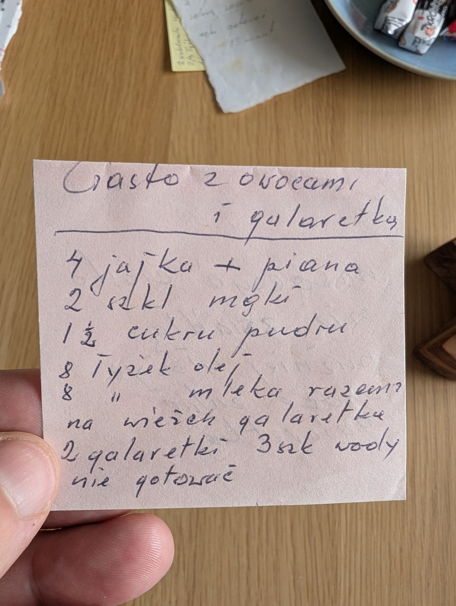

Ciasto z owocami i galaretką

Składniki
- 4 jajka
- 2 szkl. mąki
- 1½ szkl. cukru pudru
- 8 łyżek oleju
- 8 łyżek mleka
- owoce
- 2 galaretki
- 3 szkl. wody
Przygotowanie
- Jajka (z ubitą pianą), mąkę, cukier puder, olej i mleko wymieszać razem.
- Na wierzch galaretka: 2 galaretki na 3 szkl. wody, nie gotować.
Oryginalny zapis
Ciasto z owocami
i galaretką
4 jajka + piana
2 szkl mąki
1½ cukru pudru
8 łyżek oleju
8 " mleka razem
na wierzch galaretka
2 galaretki 3 szk wody
nie gotować